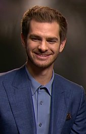

|  |
Andrew garfield
Andrew Russell Garfield (born 20 August 1983) is an English and American actor.He has received various accolades, including a Tony Award, a BAFTA TV Award and a Golden Globe Award. Time included Garfield on its list of 100 most influential
people in the world in 2022. |
About Andrew Garfield:
Born in Los Angeles and raised in Epsom, England, Garfield trained at the Royal Central School of Speech and Drama and began his career on the UK stage and in television productions. He made his feature film debut in the 2007 ensemble drama
Lions for Lambs. He won the BAFTA TV Award for Best Actor for his performance in the television film Boy A (2007). He came to international attention in 2010 with the supporting role of Eduardo Saverin in the drama The Social Network, for which
he received nominations for a BAFTA Film Award and a Golden Globe Award.
Garfield gained wider recognition for playing Spider-Man in the superhero films The Amazing Spider-Man (2012), The Amazing Spider-Man 2 (2014), and later in Spider-Man: No Way Home (2021). He received Academy Award nominations for starring as
Desmond Doss in the war film Hacksaw Ridge (2016) and as Jonathan Larson in the musical Tick, Tick... Boom! (2021). Garfield also won the Golden Globe Award for Best Actor – Motion Picture Musical or Comedy for the latter. In 2022, he starred in
the crime drama miniseries Under the Banner of Heaven, earning a Primetime Emmy Award nomination for his performance.
On stage, Garfield appeared in the 2012 Broadway revival of Death of a Salesman, which garnered him a Tony Award nomination. For playing Prior Walter in a 2017 London production of Angels in America, Garfield was nominated for a Laurence Olivier
Award; he reprised the role on Broadway the following year and won the Tony Award for Best Actor in a Play.
Early life
Andrew Russell Garfield was born on 20 August 1983, in Los Angeles, California. His mother, Lynn (née Hillman),was from Essex, England, and his father, Richard Garfield, is from California.Richard's parents were also from the United Kingdom.Garfield's parents moved the family from Los Angeles to the UK when he was three years old, and he was brought up in Epsom, Surrey.Garfield had a secular upbringing. He is Jewish on his father's side, and describes himself as a "Jewish artist.His paternal grandparents were from Jewish immigrant families who moved to London from Poland, Russia and Romania, and the family surname was originally "Garfinkel.
Garfield's parents ran a small interior-design business. His mother was also a teaching assistant at a nursery school, and his father became head coach of the Guildford City Swimming Club.He has an older brother who is an NHS doctor at Royal Brompton Hospital.Garfield was a gymnast and a swimmer during his early years.He had originally intended to study business but became interested in acting at the age of 16 when a friend convinced him to take theatre studies at A-level, as they were one pupil short of being able to run the class.Garfield attended Priory Preparatory School in Banstead and later City of London Freemen's School in Ashtead, before training at the Central School of Speech and Drama, University of London. His first job was at Starbucks, being moved between three separate establishments in Golders Green and Hendon.
Carrier
Early work and breakthrough (2004–2011)
Garfield began taking acting classes in Guildford, Surrey, when he was nine, and appeared in a youth theatre production of Bugsy Malone. He also joined a small youth theatre workshop group in Epsom and took theatre studies at A-level before studying for a further three years at a UK conservatoire, the Central School of Speech and Drama.Upon graduating in 2004, he began working primarily in stage acting. In 2004, he won a Manchester Evening News Theatre Award for Best Newcomer for his performance in Kes at Manchester's Royal Exchange Theatre (where he also played Romeo the year after), and won the Outstanding Newcomer Award at the 2006 Evening Standard Theatre Awards.Garfield made his British television debut in 2005 appearing in the Channel 4 teen drama Sugar Rush.In 2007, he garnered public attention when he appeared in the series three of the BBC's Doctor Who, in the episodes "Daleks in Manhattan" and "Evolution of the Daleks". Garfield commented that it was "an honour" to be a part of Doctor Who.In October 2007, he was named one of Variety's "10 Actors to Watch". He made his American film debut in November 2007, playing an American university student in the ensemble drama Lions for Lambs, with co-stars Tom Cruise, Meryl Streep, and Robert Redford."I'm just lucky to be there working on the same project as them, although I don't really expect to be recognized later by audiences," Garfield told Variety in 2007.In his review for The Boston Globe, Wesley Morris considered Garfield's work "a willing punching bag for the movie's jabs and low blows",
 |
In the Channel 4 drama Boy A, released in November 2007, he portrayed a notorious killer trying to find new life after prison.The role garnered him the 2008 BAFTA Award for Best Actor.Amy Biancolli of the Houston Chronicle wrote, "there is no doubt about the intelligence and sensitivity" of Garfield's portrayal.Minneapolis Star Tribune's Christy DeSmith echoed Biancolli's sentiment, citing his "detailed expressions" as an example. Writing in The Seattle Times, John Hartl noted that Garfield demonstrated range in the role, and concluded: "Garfield always manages to capture his passion".Joe Morgenstern, the critic for The Wall Street Journal, dubbed Garfield's performance "phenomenal", assessing that he "makes room for the many and various pieces of Jack's personality".In 2008, he had a minor role in the film The Other Boleyn Girl, and was named one of the Shooting Stars at the Berlin International Film Festival.In 2009, Garfield held supporting roles in the Terry Gilliam film The Imaginarium of Doctor Parnassus and the Red Riding television trilogy.Kenneth Turan of the Los Angeles Times thought that Garfield gave a stand out performance in the latter.
Garfield and Justin Timberlake at an event for The Social Network in 2010
In 2010, Garfield co-starred opposite Carey Mulligan and Keira Knightley in Mark Romanek's dystopian science-fiction drama Never Let Me Go, an adaptation of Kazuo Ishiguro's 2005 novel of the same name. He said of his character, Tommy D., "There's a sense of anxiety that runs through these kids, especially Tommy, because he's so sensory and feeling and animalistic, that's my perspective of him."Garfield was attracted to the film based on the existential questions the story expresses.He said the experience of being a part of Never Let Me Go was "just a dream to come true".He further remarked that the scenes in which his character—unable to contain his frustration—erupts with a wail, were "intense" for him. "I think those screams are inside all of us, I just got a chance to let mine out".For his portrayal of a well-meaning, but dim young man caught in a love triangle, he won the 2010 Saturn Award for Best Supporting Actor.Writing for Entertainment Weekly, Owen Gleiberman praised the performances of the lead cast, reflecting that "these three all act with a spooky, haunted innocence that gets under your skin."In comparison to Mulligan and Knightley, Scott Bowles, writing for USA Today, deemed Garfield "the real find" of Never Let Me Go.
|
The same year, Garfield co-starred opposite Jesse Eisenberg in The Social Network, a drama based on the founders of Facebook. On his character, Garfield remarked, "No one knows who Eduardo Saverin is, and I don't either. Of course, the fact he's a real-life human being, breathing on this Earth somewhere, creates a whole new dimension to my approach because you [sic] feel a greater sense of responsibility".Initially, the film's director, David Fincher, had met Garfield under the auspices of him playing Mark Zuckerberg, having been referred to him by Mark Romanek.However, Fincher did not like Garfield for the part as he found Garfield's "incredible emotional access to his kind of core humanity" better tailored for the role of Saverin.Garfield's performance was very well received; he earned wider recognition and numerous nominations, including BAFTA nominations for Best Actor in a Supporting Role and Rising Star, as well as a Golden Globe nomination for Best Performance in a Supporting Role.Mark Kermode of the BBC expressed his surprise that Garfield had
been overlooked for an Academy Award nomination, opining that "everyone knows he's one of the very best things about The Social Network.Writing in The Wall Street Journal, Joe Morgenstern thought the role was portrayed with "great subtlety and rueful charm".Rolling Stone said Garfield delivered "a vulnerability that raises the emotional stakes in a movie", and proclaimed: "Keep your eyes on Garfield — he's shatteringly good, the soul of a film that might otherwise be without one.
Skills
| Web Developement |
⭐⭐ |
Photography |
⭐⭐⭐⭐ |
| Art |
⭐⭐⭐⭐ |
ios Developement |
0️⃣⭐ |
more info
Contact me--